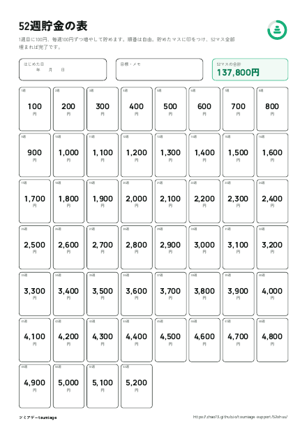

52週貯金のやり方と表
毎週の貯金額を100円ずつ増やしていく、1年がかりの貯金チャレンジです。表に印をつけながら進めると、あと何マスかが一目でわかります。
137,800円1年（52週）で貯まる金額（1マス100円の場合）
52週貯金のやり方
- 表を用意する。 100円から5,200円まで、100円きざみの52マスの表を使います。下の PDF を印刷するか、アプリで「52週貯金」を選びます。
- 毎週1マス選んで貯める。 選んだマスの金額を、貯金箱か貯金用の口座に入れます。
- 入れたマスに印をつける。 チェックしたマスが増えるほど、合計が積み上がります。
- 52マス埋まったら完了。 1マス100円なら、合計137,800円になっています。
合計 ＝ 100円 ×（1＋2＋…＋52）＝ 100円 × 52 × 53 ÷ 2 ＝ 137,800円
52週貯金の表（チェックできます）
1マスがその週の金額です。順番は自由。押したマスの合計が上に出ます。
0円0 / 52 マス（全部で 137,800円）
52週貯金はいくら貯まる？早見表
順番どおりに進めると最初は楽で、後半ほど1回の金額が大きくなります。逆から進めると、その反対です。
| 経過 | 順番どおり：その週 | 順番どおり：合計 | 逆から：その週 | 逆から：合計 |
|---|---|---|---|---|
| 1週目 | 100円 | 100円 | 5,200円 | 5,200円 |
| 4週目 | 400円 | 1,000円 | 4,900円 | 20,200円 |
| 13週目 | 1,300円 | 9,100円 | 4,000円 | 59,800円 |
| 26週目 | 2,600円 | 35,100円 | 2,700円 | 102,700円 |
| 39週目 | 3,900円 | 78,000円 | 1,400円 | 128,700円 |
| 52週目 | 5,200円 | 137,800円 | 100円 | 137,800円 |
金額を変えた例：1マス10円にすると合計13,780円、1マス1,000円にすると合計1,378,000円です（どちらも 1,378 × 1マスの金額）。
4つの進め方
どの進め方でも、52マス全部を埋めれば合計は同じです。
順番どおり
100円、200円、300円…と増やします。始めやすい反面、年末の週は5,000円台になります。12月の出費やボーナスも考えて計画を。
逆から
5,200円から始めて、100円ずつ減らします。やる気のある最初に大きな額を済ませるので、出費の多い年末が楽になります。
好きなマスから
その週に出せる額のマスを選びます。給料日のあとは大きいマス、苦しい週は小さいマス。途中でやめにくい進め方です。
おまかせ
残っているマスから1つをランダムに選びます。くじ引きのような楽しさがあります。アプリの「おまかせ」ボタンでも選べます。
52週貯金を続けるコツ
- 始める日を決めておく。1月1日でも、誕生日や給料日でも構いません。始めた週が1週目です。
- 順番どおりの場合、折り返しの26週目でも合計は35,100円で、全体の約25%です。後半に大きい金額が続くことを先に知っておくと慌てません。
- 毎週同じ曜日に貯める。口座なら、給料日に貯金用の口座へ先に移しておくと忘れません。
- 払えない週は小さいマスを選ぶか、翌週に2マス分を貯めます。やめないことがいちばん大事です。
- 表は目に入る場所に貼る。アプリならホーム画面のウィジェットで進み具合が見えます。

52週貯金の表（A4・印刷用）
100円〜5,200円の52マスに、開始日と合計の欄をつけた A4 1枚の表です。白黒で印刷しても見やすい線にしています。ダウンロードは無料です。
iPhone でマスを埋めて記録する
ツミアゲでは、52週貯金をこの表と同じマスで記録できます。ホーム画面やロック画面のウィジェットからワンタップで記録でき、広告は出ません。
よくある質問
52週貯金で1年にいくら貯まりますか？
1週目100円から毎週100円ずつ増やす場合、52週で137,800円です。1マス10円なら13,780円、1マス1,000円なら1,378,000円になります。
途中の月から始めてもいいですか？
はい。何月から始めても、始めた週を1週目として数えます。52週たてば同じ137,800円になります。
その週に払えなかったらどうすればいいですか？
小さい金額のマスを選ぶか、翌週に2マス分を貯めてください。順番は自由なので、最後に52マス埋まれば合計は変わりません。
現金と口座、どちらで貯めるのがいいですか？
どちらでもできます。現金は貯まっていくのが目に見え、口座は使い込みにくいのが利点です。ツミアゲはどちらの場合も金額を記録できます。
表はどこで手に入りますか？
このページから A4 の PDF を無料でダウンロードできます。このページの表をそのままチェックして使うこともできます（チェックはお使いのブラウザに保存されます）。